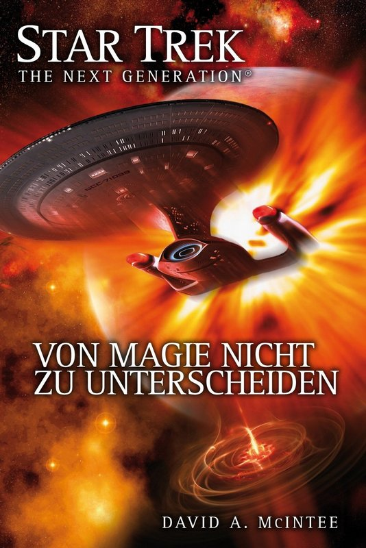

von Andreas Loos (www.ringbote.de)

Star Trek TNG (The Second Decade 07): Von Magie nicht zu unterscheiden (© Cross Cult)
(al) – Ein altes Schiffswrack gibt der Sternenflotte große Rätsel auf. Zusammen mit dem legendären Scotty von Kirks Enterprise und einem Schiff voller Ingenieure macht sich Geordi La Forge auf, das Rätsel zu lösen. Aber das ist nur der Auftakt zu einem größeren Abenteuer …
Der Verlag hat hier eigentlich zwei Bände in diesem Buch vereinigt, die quasi einen Ausflug La Forges von der Enterprise-E bedeuten. Der siebte Band des TNG-Relaunches lässt nur wenig Platz für Captain Picard. Dieser bekommt nur am Anfang und am Ende einen jeweils recht kleinen Auftritt. Stattdessen nehmen Geordi La Forge und Scotty die Hauptrollen ein.
Ein Schiffswrack der NX-Klasse, die Intrepid, wird zufällig im Raum treibend gefunden. Das Schiff gibt eine Menge Rätsel auf. Deshalb entsendet die Sternenflotte die U.S.S. Challenger, die von niemand Geringerem als Scotty befehligt wird. Auf dem Schiff tummeln sich jede Menge Ingenieure, die dem Fan ein Begriff sind. Die Besatzung wurde aus allen Ecken der Galaxis zusammengezogen. Das kommt nicht nur den Charakteren im Buch seltsam vor. Selbst für Star Trek schien es mir zu weit hergeholt, dass sich der unter Transporterphobie leidende Reginald Barclay von einer Mission im Gamma-Quadranten extra herbeamen lässt. Das hätte man sich schenken können.
Ansonsten geht es quer durch das Franchise. Ob es nun Nog von DS9 ist oder Guinan, die U.S.S. Challenger hat einfach zu viel namhaftes Personal an Bord. Die Fans werden zwar wissend nicken, ein Neuling im Franchise aber wird ob der vielen Anleihen auf verschiedene Episoden der Fernsehserien und Filme und der in der Zwischenzeit erschienenen Bücher leicht überfordert sein. Nur wenige werden sich zum Beispiel an Berlinghoff Rasmussen erinnern, der im ersten Teil des Buches eine wichtige Rolle spielt. Auch Leah Brahms dürfte nur den eingefleischten Fans ein Begriff sein. An der Darstellung der einzelnen Charaktere habe ich nichts zu bemängeln, der Autor kann diese recht überzeugend in Szene setzen. Dreht sich der erste Teil noch um das Wrack der Challenger, so spielt die Ursache für das Verschwinden des Schiffs im zweiten Teil »Möbius-Reise« eine zentrale Rolle. Aber auch ein paar altbekannte Feinde der Föderation haben ihre Finger im Spiel und wollen die Situation zu ihrem Vorteil nutzen.
Die Auflösung der Handlung, welche sich unmittelbar an die des ersten Teiles anschließt und die Besatzung der Challenger über die Grenzen der bekannten Galaxie hinausführt, ist für meinen Geschmack sehr gut gelungen, und trotz seines enormen Umfangs, wird der Roman an keiner Stelle langweilig.
Fazit: McIntee hat in die beiden Teile dieses Bandes einfach ein wenig zu viel gepackt. Hier tummeln sich zu viele namhafte Charaktere, die vielversprechendem neuem Personal fast schon die Möglichkeit nehmen, sich zu entfalten. Trotzdem gelingt es ihm jeweils, einen schlüssigen Plot zu entwerfen. Die Lösungen fallen entsprechend spektakulär und dramatisch aus und versöhnen mich auch mit der holprigen Handlung, die streckenweise unter zu vielen Subplots leidet. Und auch diesmal scheint es so, dass für ein paar alte Charaktere der letzte Vorhang gefallen ist. Ob dem wirklich so ist, bleibt abzuwarten.
Star Trek TNG (The Second Decade 07): Von Magie nicht zu unterscheiden
Film/Serien-Roman
David A. McIntee
Cross Cult 2013
ISBN: 9783864252938
505 S., Taschenbuch, deutsch
Veröffentlichung mit freundlicher Genehmigung von www.ringbote.de